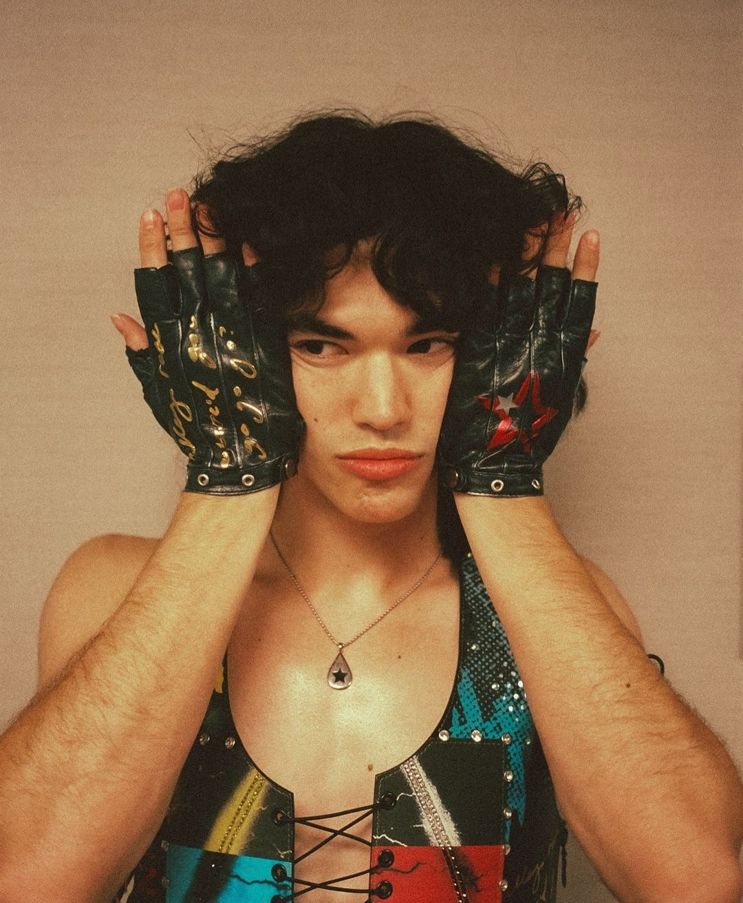

welcome to your silly little website made by your silly little hopeless hehe 😼
i made this just for you because you deserve something soft, sweet, and full of love 💌
this is your little corner of the internet.I made with way too much love, maybe a bit too much time, and all of my heart 🥺
it's not just a website. it's a piece of you. your favs, your vibes, your softness and chaos.
scroll around. explore. smile. cry a little (just a little tho pls 😭)
and remember. this exists because i love you so, so much. more than conan gray loves sad songs fr.
Music
💫 Maram's Top 5 Favorite Artists 💫
1. Conan Gray: Conan is an American singer-songwriter who first rose to fame on YouTube before
releasing his breakout hit Heather. Known for writing heart-wrenching songs about love, loneliness, and identity,
Conan's music blends bedroom pop with raw, emotional lyricism — something that clearly resonates with Maram. Fun Fact: Before his music career took off, Conan used to make vlogs and write poetry — he's
been creative since he was a kid.

2. Sombr: Sombr is a lesser-known but deeply emotional artist whose music explores
vulnerability, heartbreak, and longing. With a voice that sounds like it's carrying the weight of everything
unsaid, Sombr's songs strike a chord with people who overthink, overfeel, and fall too hard. Fun Fact: Though not mainstream, Sombr's cult following comes from TikTok and late-night
playlists — people find their way to his songs when they need comfort.
3. bbno$: Pronounced baby no money, bbno$ is a Canadian rapper and internet personality known
for his playful lyrics and infectious beats. His music is the complete opposite of sad boy pop — it's loud,
chaotic, and fun — proving Maram has RANGE. Fun Fact: He originally studied kinesiology and planned to be a physiotherapist before turning
to music full-time!
4. Gracie Abrams: Gracie's soft voice and honest songwriting have made her a favorite among
indie pop fans. Her lyrics often feel like pages from a diary — introspective, tender, and painfully relatable.
She's part of the new wave of singer-songwriters who turn vulnerability into art. Fun Fact: Gracie is the daughter of film director J.J. Abrams (yep — Star Wars and Star Trek)
but carved her own path in music.
5. Olivia Rodrigo: Known for drivers license, good 4 u, and her GRAMMY-winning debut album SOUR,
Olivia is the voice of Gen Z heartbreak. Her blend of emotional ballads and pop-punk anthems make her a must on
any heartbreak playlist — which Maram obviously vibes with. Fun Fact: Olivia was inspired by Taylor Swift and Lorde, and often writes her lyrics in one go
— she calls it "purging" her feelings into her songs.
💖 Maram’s Top 5 Favorite Songs 💖
1. Fight or Flight – Conan Gray "Fight or flight, I'd rather lie, Than tell you I'm in love with you"
2. Undressed – Sombr " I don't wanna get undressed For a new person all over again I don't wanna kiss someone
else's neck And have to pretend it's yours instead"
3. Bourgeoisieses – Conan Gray idk 😭
4. The Exit – Conan Gray "Feels like we had matching wounds But mine's still black and bruised And yours is perfectly
fine now"
5. Movies – Conan Gray idk 😭
🎬Maram's Favorite Movies 🎬
Favorite Movie Series: The Harry Potter Series
Favorite Movie: Harry Potter and the Prisoner of Azkaban
Backstory: In Harry Potter and the Prisoner of Azkaban, Harry returns to Hogwarts for his third
year, but danger looms as Sirius Black — a notorious prisoner — has escaped from Azkaban. Everyone believes he's
out to kill Harry. As Harry unravels the mystery, he discovers shocking truths about his parents, betrayal, and
loyalty. With the help of Hermione and Ron, Harry confronts his past and begins to understand the true meaning of
family and friendship.
Fun Fact: The character of Sirius Black was the first major role Gary Oldman took after a long
break — and he was cast because his kids were fans of the books!
🍽️Maram's Favorite Food 🍽️
1. Fattoush: Apparently Maram loves fattoush, well we learn something new everyday 🙂
She said. And I Quote "The sourness in it😋" Weirdo
Fattoush is a fresh and tangy Middle Eastern salad that combines crispy pieces of toasted or fried pita bread
with a colorful mix of vegetables. It’s known for its bold flavors and refreshing taste, often served as a starter
or side dish.
What It’s Made Of:
Toasted or fried pita bread (cut into pieces)
Tomatoes
Cucumbers
Radishes
Lettuce or mixed greens
Parsley
Mint
Green onions
Olive oil
Lemon juice
Sumac (a tangy, lemony spice)
Fun Fact abt it:
The word Fattoush comes from the Arabic word "fatteh," which means "crumbs" — a nod to the use of leftover pita
bread in the dish :)
Description:
Shawarma is a beloved Middle Eastern street food made of thinly sliced meat that's been marinated in flavorful
spices, stacked on a vertical spit, and slow-roasted to juicy perfection. It’s usually served wrapped in pita
bread with a variety of tasty toppings and sauces.
What It’s Made Of:
Marinated meat (commonly chicken, beef, or lamb)
Garlic
Yogurt or vinegar (for marinating)
Spices like cumin, paprika, turmeric, and cinnamon
Pita bread or flatbread
Toppings: tahini, garlic sauce, pickles, tomatoes, onions, lettuce, and sometimes fries inside the wrap!
Fun Fact:
Shawarma is so popular in the Middle East that it's considered the local version of fast food and funnily enough,
it even made a surprise appearance in a Marvel post-credits scene (The Very First Avengers Movie 😭)
🎮Maram's Favorite Games 🎮
Maram's Favorite Game is:
Genshin impact: (Apparently she only likes genshin impact)
Fun Fact: Maram is a popular (in my eyes) Genshin Impact Content Creator
Backstory:
In Genshin Impact, you play as the Traveler, a mysterious being from another world who arrives in the land of
Teyvat with their twin sibling. But during a sudden conflict with a powerful unknown force, the two are separated
and the Traveler is sealed away, waking up in a strange world alone. Now, with the help of a floating companion
named Paimon, you journey across Teyvat’s seven elemental nations in search of your lost sibling, uncovering
ancient secrets, gods known as Archons, and a deeper mystery that threatens the entire world.
Description:
Genshin Impact is an open world action role-playing game where players explore the magical land of Teyvat, a world
filled with elemental powers, mythical creatures, and ancient secrets. You play as the Traveler, searching for
your lost sibling while meeting a diverse cast of characters — each with unique abilities tied to elements like
wind, fire, water, and more. The game combines exploration, combat, and story-rich quests in a stunning
anime-style world.
Constant updates with new regions, characters, and stories
Fun Fact:
Genshin Impact was developed by the Chinese studio HoYoverse and it made over $1 billion in revenue within just
six months of its release making it one of the most successful mobile games ever!
📚Maram's Favorite Books 📚
1. No Longer Human – Osamu Dazai
Backstory:
No Longer Human follows Ōba Yōzō, a man who feels completely disconnected from society and struggles to present a
false, cheerful persona to mask his inner emptiness. Told through a series of notebooks, the novel explores his
descent into isolation, addiction, and despair a haunting reflection of alienation in modern life.
Fun Fact:
This book is considered semi-autobiographical and is often seen as Osamu Dazai’s personal farewell he died by
suicide shortly after it was published in 1948.
2. Crime and Punishment – Fyodor Dostoevsky
Backstory:
Set in 19th-century St. Petersburg, the novel follows Rodion Raskolnikov, a poor former student who believes he’s
above moral law. He murders a pawnbroker, thinking it will benefit society but the guilt slowly consumes him. The
story dives into psychological torment, redemption, and the weight of conscience.
Fun Fact:
Dostoevsky wrote this while battling severe debt and gambling addiction some say he infused Raskolnikov with his
own inner conflicts.
3. White Nights – Fyodor Dostoevsky
Backstory:
A lonely dreamer wanders the streets of St. Petersburg during the short summer nights and meets Nastenka, a young
woman waiting for her lost love. Over four nights, they connect deeply but reality interrupts their fleeting
romance. It’s a bittersweet tale of unspoken love, hope, and heartbreak.
Fun Fact:
Despite being one of Dostoevsky’s shorter works, White Nights remains a favorite for its emotional simplicity and
it was later adapted into multiple films, including an Italian version by Luchino Visconti.
❤️
❤️
❤️
❤️
💖Love Letter💖
My dear Maram,
I hope you’re reading this during a calm moment. when things are quiet and you can just take a breath, relax, and
feel a little peace.
I’ve been thinking about you a lot… probably more than I should admit. But then again, you’ve always had that
effect on me. There’s just something about you. Idk maybe it’s your quiet strength, or the way your laugh feels
like it holds everything together. Whatever it is, it sticks with me, no matter how far or how long we’ve been
apart.
I keep thinking about us. Not just the smiles and those little looks we used to share, but the peace in our
silence, the honesty in just being near each other. That closeness didn’t need words. It felt real, it was real.
And I still hold onto those memories like a photo I never want to lose.
There are things I’ve been meaning to say. Things I didn’t know how to say when we were standing face to face.
But here, in writing, I’ll try.
You’ve always been the kind of person who makes me want to be better kinder, stronger, more open. Not because you
ever asked for that, but because you deserve it. You deserve someone who sees the best in you and wants to walk
beside you with patience and love. And I just hope that, even on the quietest days, you know how deeply you’re
loved.
I carry you with me every day. Not as something heavy, but like a guide. Thinking of you calms me, reminds me of
who I am when I’m with you, and gives me hope. Even if I don’t always say the right thing, I need you to know that
you’ve left a part of yourself with me that I’ll never let go of.
And I hope, no matter where life takes us, we both always know that I’m yours.
_1750484852784.png)
_1750484852786.png)
_1750484852784.png)
_1750484852783.jpg)
_1750484852785.png)
_1750484852786.png)
_1750484852785.png)